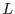
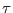

Essentially this involves masking off all pixels whose values exceed a certain limit. The value of this is that bright non-background regions of an image can be easily excluded. A complication is introduced into the calculation of  because the probability of occurrence of any pixel value now obeys a truncated Poisson distribution, as follows:
where  is the truncation level (rounded to the next lowest integer). Otherwise the procedure is unchanged.